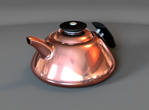

修改基于图像打光的设置
场景编辑器对话框应该仍然是打开的。
-
在场景编辑器对话框中，点击光源选项卡。
在场景光源列表中，将列出模型中的光源，这些光源既不属于基于图像的打光，也不属于全局照明。
如果您使用全局照明，又想要逼真的阴影，应该关闭全部非 IBL 打光的阴影，在本练习中，需要关闭顶部光源。
-
在场景光源组中，从列表中选择场景顶部，然后清除使用基于图像打光
 复选框。
复选框。 -
在全局照明选项卡的高质量图像设置组中，设置如下选项：
-
在高质量图像中使用基于图像打光 =

-
强度 = 0.75
-
精度 = ~500
-
阴影类型 = 硬边缘
-
阴影柔和度 = ~.50
-
-
点击应用。
-
点击高质量图像渲染工具条上的启动 HQI 渲染
 。
。
关闭顶部光源后，所有的光源都将来自高动态范围环境图像中，因此光源和阴影都将更逼真。
-
点击去除 HQI 渲染
 。
。